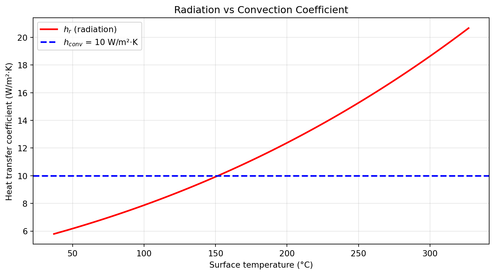

Radiation becomes significant when: - Temperatures are high (T⁴ dependence) - Convection is weak (natural convection, vacuum) - Surfaces have high emissivity
import matplotlib.pyplot as pltTinf =300# Keps =0.9h_conv =10# W/m²·KTs_range = np.linspace(310, 600, 100)h_rad = radiation_coefficient(eps, Ts_range, Tinf)plt.figure(figsize=(10, 5))plt.plot(Ts_range -273, h_rad, 'r-', linewidth=2, label='$h_r$ (radiation)')plt.axhline(y=h_conv, color='b', linestyle='--', linewidth=2, label=f'$h_{{conv}}$ = {h_conv} W/m²·K')plt.xlabel('Surface temperature (°C)')plt.ylabel('Heat transfer coefficient (W/m²·K)')plt.title('Radiation vs Convection Coefficient')plt.legend()plt.grid(True, alpha=0.3)plt.show()

20.4 Example: Thermos Flask
A thermos minimises all three modes: - Conduction: Vacuum gap eliminates it - Convection: Vacuum prevents fluid motion - Radiation: Silvered surfaces (low ε) reduce exchange
# Thermos analysisT_hot =373# K (boiling water)T_cold =293# K (room temperature)eps =0.05# Silvered surfaceA =0.05# m² inner surface# Only radiation remains (vacuum)Q_rad = eps * sigma * A * (T_hot**4- T_cold**4)print(f"Heat loss (silvered): {Q_rad:.2f} W")# If surfaces were blackQ_black = sigma * A * (T_hot**4- T_cold**4)print(f"Heat loss (black): {Q_black:.2f} W")print(f"Reduction factor: {Q_black/Q_rad:.0f}×")
Heat loss (silvered): 1.70 W
Heat loss (black): 33.98 W
Reduction factor: 20×